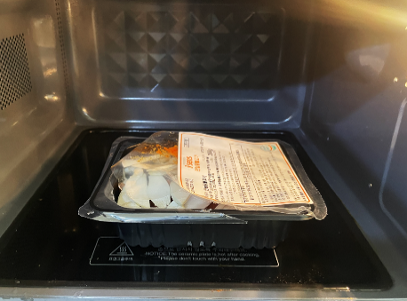
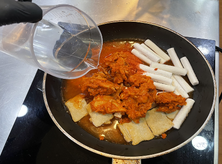
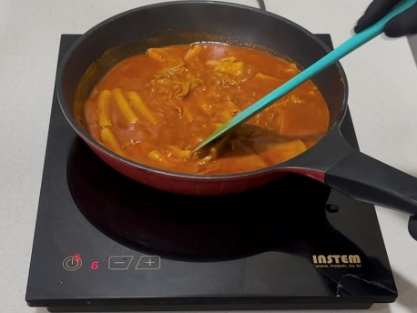
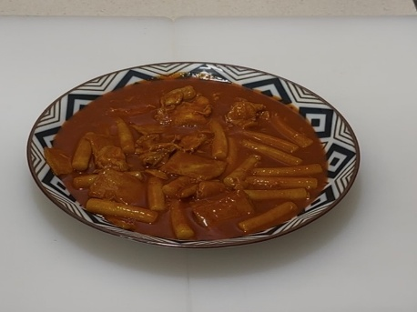
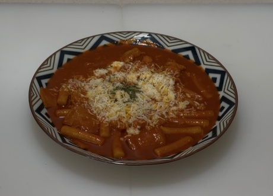

| 메뉴명 | 치즈 듬뿍 닭갈비떡볶이 |
|---|---|
| 판매가격 | 9,900원 |
| 원재료 | 만능 닭불고기, 오리지널 떡볶이, 엔젤헤어치즈, 파슬리 |
| 사용 부자재 | 돈까스 접시 |
| 메뉴특징 | 진한 닭갈비 양념에 고소한 치즈가 더해진 중독성 강한 떡볶이 |
※ 라면사리 추가 시, 물 300g으로 변경하여 조리할 것! (조리 시간 동일)
※ 픽업 멘트: "다 드신 후 소스에 '후식 김가루밥'을 추가해 비벼 드시면 맛있습니다!"




